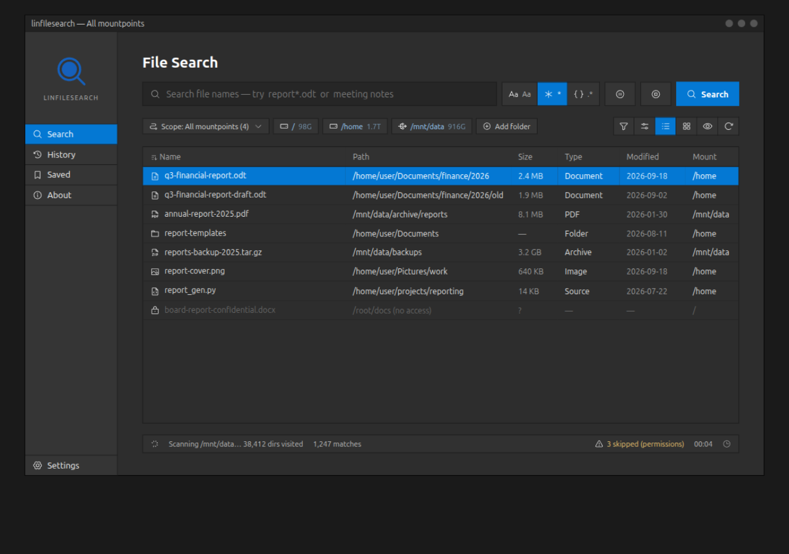
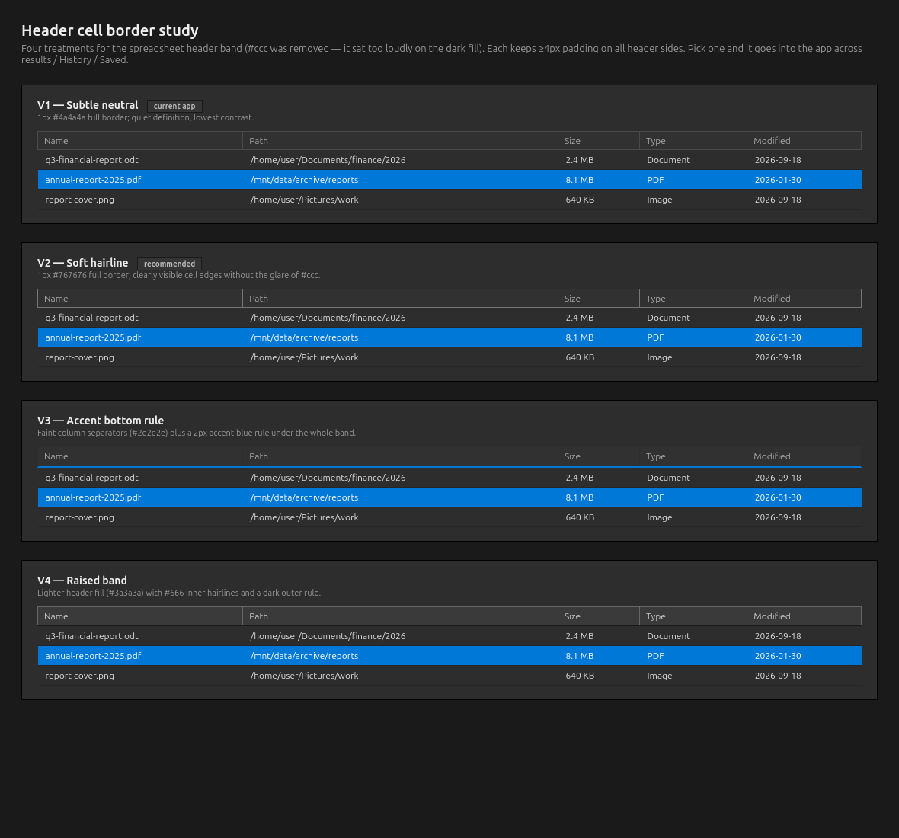
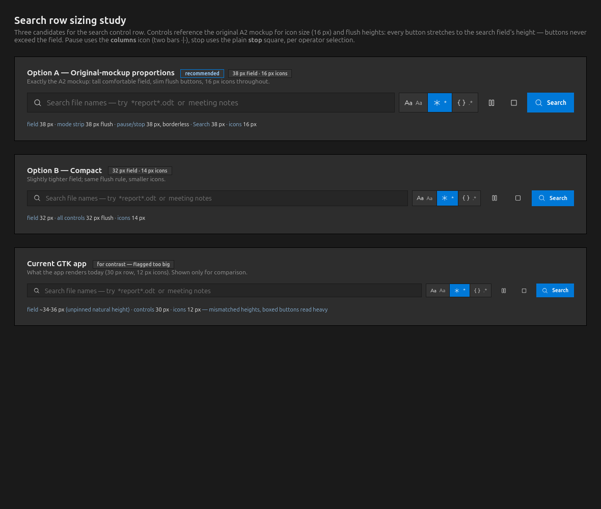
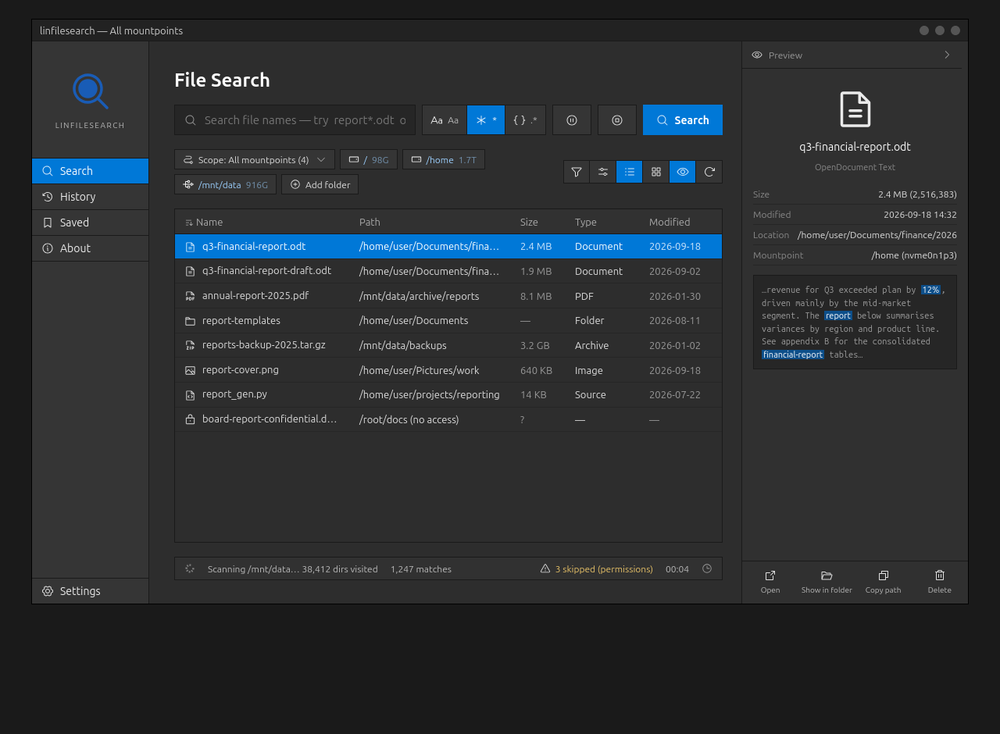
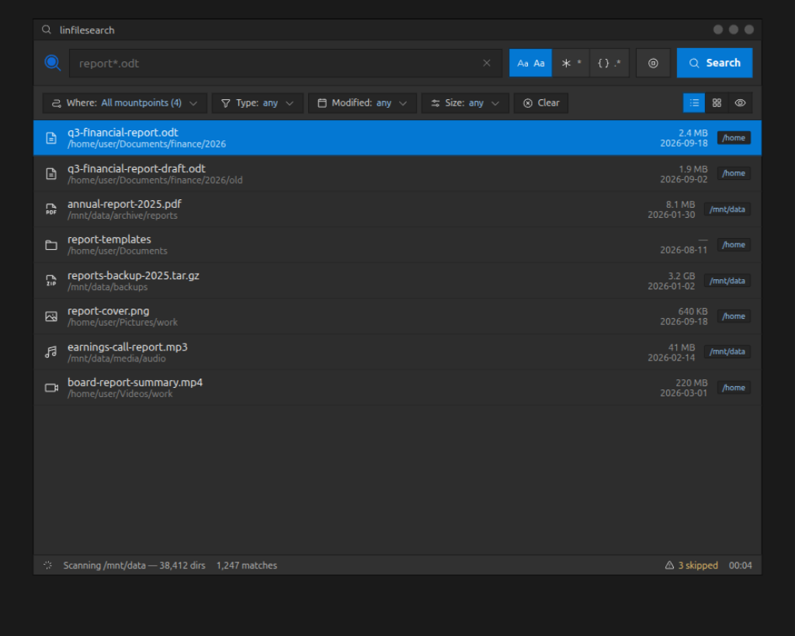
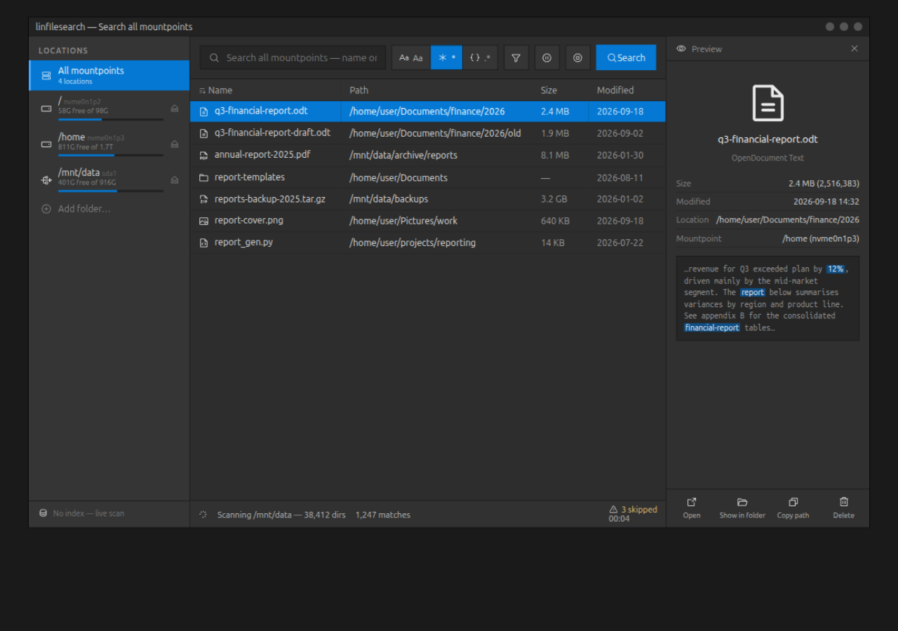
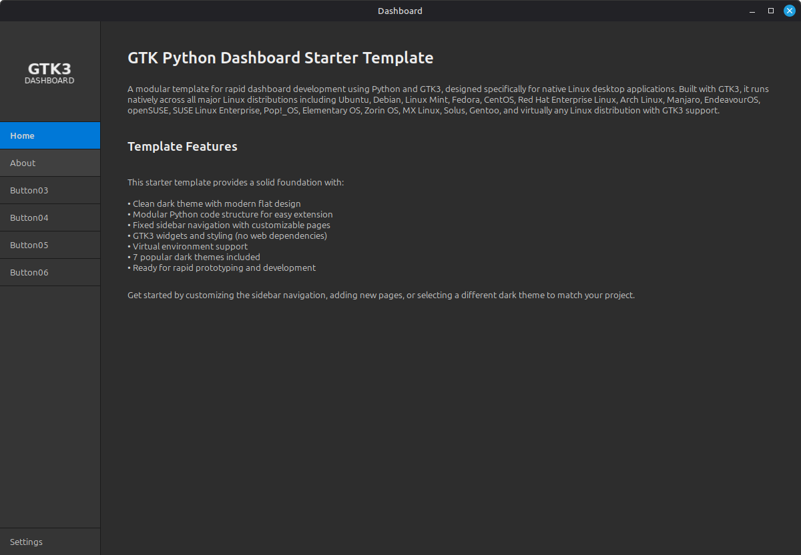

Starter-faithful: 150px icon sidebar (Search / History / Saved / Settings), full search page with mode toggles (Aa * .*), scope chips per mountpoint, sortable results table with type icons, streaming status bar.

Four treatments for the spreadsheet header band after removing #ccc: subtle neutral (current app), soft hairline #767676 (recommended), accent bottom rule, and raised band. All keep ≥4px header padding. Awaiting operator pick (r016).

Three candidates for the search control row, dimensioned against the search field and referencing the original A2 mockup proportions (16 px icons, flush heights). Pause uses the columns two-bar icon, stop the plain stop square (operator selection, r012).

Chosen direction (operator, r004). Mockup A with a collapsible right preview pane: file metadata, snippet preview with match highlighting, and actions. Folds to a 36px rail (eye icon) — the interactive page toggles via the eye tool, the rail, or the header caret; collapsed state also loads directly.

Chrome-less single-toolbar tool: query + modes + actions in one row, filter chips below, dense two-line result rows with mount badges. Fast to read, small window, least starter code reuse.

Locations rail with per-mount capacity bars and eject buttons (hard-drive / usb / network icons), center results, right preview pane with metadata, snippet preview and file actions.

gtk-python-dashboard-starter running from this project (python3 src/main.py, X11). The mockups keep its flat dark look and single blue accent, adding Phosphor icon tool buttons.